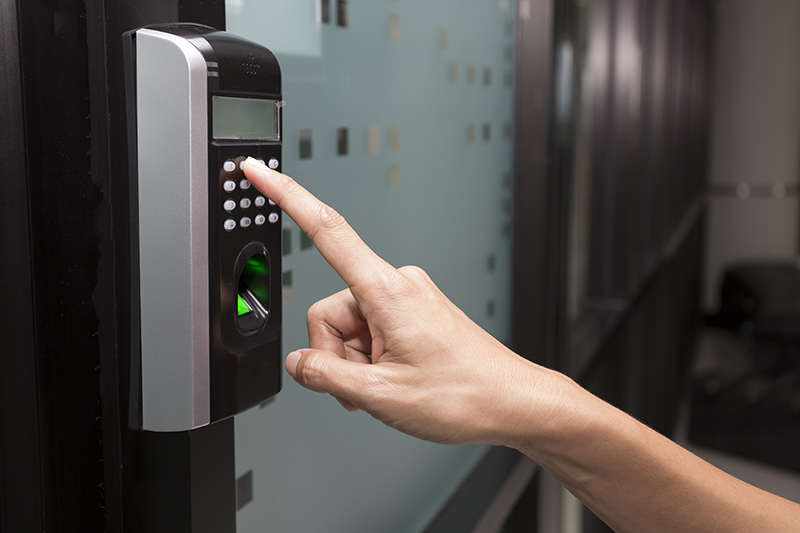
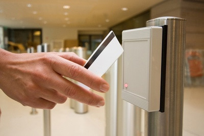
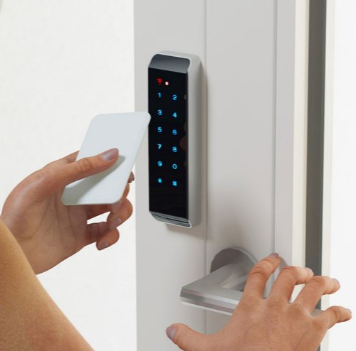

Access Control System
Access control systems are the electronic systems that are designed to control through a network and they should have an access to a network. Access Control System recognizes authenticates and authorizes entry of a person to enter into the premise thereby giving complete protection ensuring security with the system.
Bio metric Access Control System :
The Bio metric Access Control System is a time attendance control system with fingerprint access and it tracks and records data of Visitors and Employees through its Access Software. This is widely used in confidential places for its easy installation and high security. Bio metric Access Control System uses fingerprint instead of card system for access. The Access Control System not only permits entry but also gives the data regarding the entry of persons. The Attendance Software can be integrated with any existing payroll software and it gives automatic record of information generated by the Attendance System and this saves time and resources in recording. It increases productivity and profitability for any organization.
Proximity Access Control System:
The proximity access control system is more confidential access control system. It ensures a safety environment and it is widely used in office, factory, bank, etc.. There are about 50 kinds of time zone settings and 5 open door groups.
Door Access control Systems :

Access Control Door opening/closing System is a compact, low cost,
standalone. It is ready to use, easy to install device. Any
electrician can install it with electromagnetic lock with simple
instructions provided. It is widely used in Offices, Server rooms,
Homes, Airports, Defense, Data centers etc. Access control systems
within a building may be linked or standardized based on the size
of the organization and the varying levels of security. It is
suitable for homes, offices and other access control applications.
Access control systems were typically administered in a central
location. Besides electronic door locks, there are access control
panel models, magnetic door locks with uninterrupted power
supplies.
Access Control Door opening/closing System is a
compact, low cost, standalone. It is ready to use, easy to install
device. Any electrician can install it with electromagnetic lock
with simple instructions provided. It is widely used in Offices,
Server rooms, Homes, Airports, Defense, Data centers etc. Access
control systems within a building may be linked or standardized
based on the size of the organization and the varying levels of
security. It is suitable for homes, offices and other access
control applications. Access control systems were typically
administered in a central location. Besides electronic door locks,
there are access control panel models, magnetic door locks with
uninterrupted power supplies.
Features :
- Provide High Security
- High-performance, maintenance-free
- Fast and Perfect Authentication (less than 1 sec.)
- Reduces administrative cost.
Feature of smartcard reader:
- Compact Designing, ABS Housing
- Up to 50,000 Punch Storage Capacity
- Up to 99 Terminal Networking
- Programmable IN/OUT Setting
- Up to 10,000 Employee Database Can be Stored with Employee name
- 16X4 LCD Display for Date, Time, Employee Name, Card Number
- Switch Mode Power Supply (SMPS)
- Connectivity Through Rs232, Rs485, TCP/IP, Modem
- Online Data Transfer
- Voice Messaging
Security Access Control System:

There are many options in security access control system for
example, in a home security system that can be customized to meet
each individual and family needs and they are burglar alarm
systems, fire and carbon monoxide detection systems,
closed-circuit TV video systems, card access and automation
systems.
The systems consist of sensors placed at different locations
throughout the house that communicate with a central control unit.
The control unit is connected to an alarm or to an automatic
telephone dialer or Internet connection to monitor.
These systems are available as monitored or non-monitored which
simply activate a loud or flashing alarm attached to the home,
give homeowners a false sense of security. In a monitored system,
it is connected to a 24-hour central monitoring service and this
service receives an intruder signal. The home is called within
seconds and the person who answers must give their name and the
pass code whereas in a Non-monitored alarm systems call is set to
dial the local police directly when the system detects an
intruder.
A wired security system is connected by low-voltage wires and a
wireless security system employs tiny radio transmitters which
transmits signals to the central control unit. All these control
units have batteries and if there is a power failure or if the
wires are cut many systems have batteries that automatically
recharge when the unit is online with the household power.
This is all about access control system and its types which
provides security by giving flexible control over who is allowed
to enter your premises. Further any information regarding this
article,you can contact us by commenting in comment section given
below.